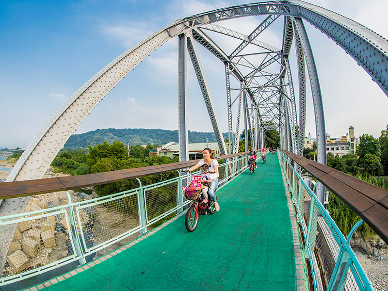
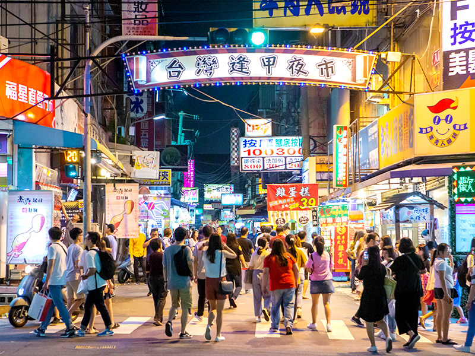
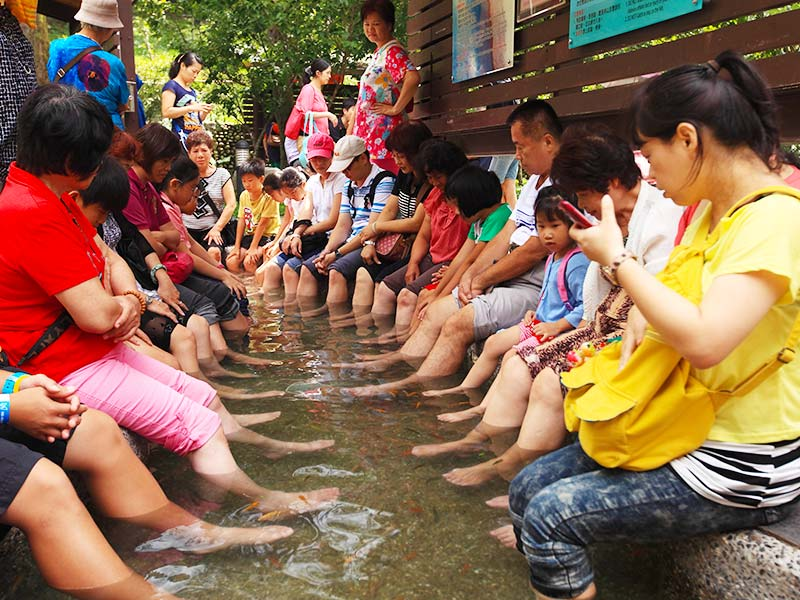

Taichung
The Dongfeng Bicycle Green Way
The Dongfeng Bicycle Green Way passes through the previous Dongshi Branch of Taiwan South-North Railway that connects Fengyuan and Dongshi and runs through Dongshi District, Shigang District and Fengyuan District. Thanks to the efforts of many people, the route was transformed into a bicycle lane in September, 1991 and has been renamed as the "Dongfeng Bicycle Green Way" after the gas-run vehicles ceased operating. The Dongfeong Bicycle Green Way is a one-lane road that can be used by bicycles from both directions. Cyclists can enjoy the rolling hills, the changes in the people and in the landscape along the way. One can see the dominant culture of the Hakka ethnic group amidst vast verdant farmlands crisscrossed by foot paths. After the Green Way was opened to the public, a tourist center was established in 2003 to better cater for the needs of tourists. From where it is located on the Shihgang section, the center commands a panoramic view of the adjacent blue Daja River and serves as an ideal place for leisure and recreation activities on holidays. Nighttime sightseeing has become a new tourist option, when night lighting facilities were added to the entire section making it Taiwan's first night-time bicycle lane.
Feng Chia Night Market
Feng Chia Night Market is within a 1 kilometer radius of Feng Chia University. It includes Wen-hua Night Market, Feng jia Road, Xitun Road, Fuxing Road and Beacon Sun Plaza. According to marketing surveys, it is one of the most popular and visited night markets among young people. At weekends, as many as 30,000 people will pass through it! It is perhaps the most famous night market in all of Taiwan. Feng Chia has all kinds of creative take-away snack foods to sample; it is also full of new clothes that are oriented toward young students. They are fair-priced and fashionable. A sensory feast for both the eyes and palate! (Xitun District)
Guguan Hot Spring
Guguan is situated amidst rugged terrain, with high mountain peaks reaching to the sky. The hot springs flow from between the rocks at the foot of the mountains all year round. Due to the high sulfur content the air is filled with the pungent smell of sulfur when close to the springs. It is said that after bathing here the Meiji emperor of Japan had a son, leading to the springs being nicknamed “Son Springs.”